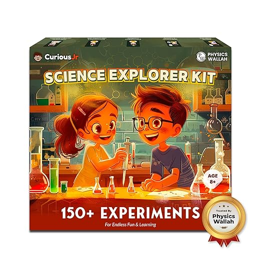

Math Readiness
Step up to the secondary maths activity when learners are ready for extra practice.
Practice MathsThis stage blends revision and exploration. Students can move into quizzes, problem solving, and subject-based practice with clear next steps.
Step up to the secondary maths activity when learners are ready for extra practice.
Practice Maths
Use the science quiz as a bridge from primary learning to subject-based revision.
Open Science
Read, think, and answer through a beginner-friendly English quiz page.
Improve EnglishExplore a broader set of questions to build curiosity and revision habits.
Start GK Quiz